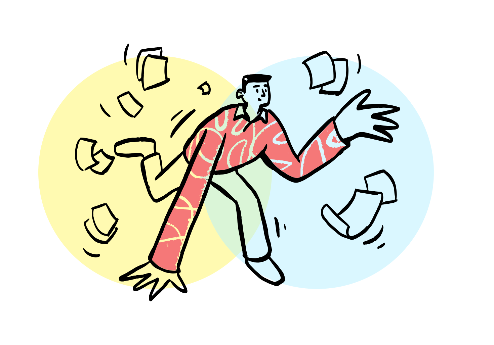
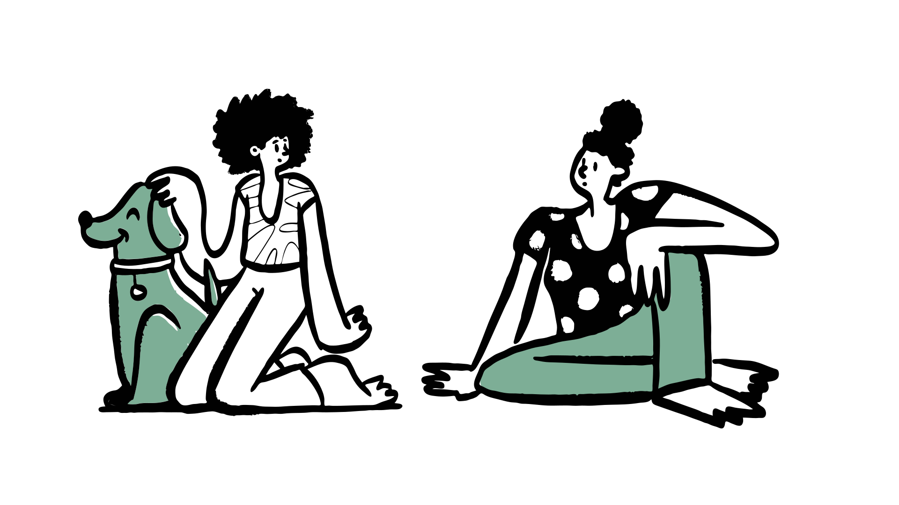

How big is the problem, really?
The data made the challenge clear — and it pointed beyond knowledge gaps toward something more emotional.
UK adults lack basic financial literacy — leaving them without the knowledge to plan for retirement.
— agediversity.orgof UK adults do not have a plan for their retirement finances.
— OECDBeyond literacy and planning gaps, the research pointed to an emotional barrier: many people avoid retirement planning altogether because it triggers anxiety, overwhelm, or procrastination — a behavioural wall that information alone does not break.
People in their mid-30s to 50s begin recognizing the importance of financial planning but often lack the tools and the emotional readiness to act. Existing solutions are either too complex, overly technical, or fail to meet users where they actually are.
Why does this problem matter?
Three contributing factors shaped the design challenge.

The absence of early financial planning creates compounding insecurity later in life — a problem that grows quietly until it cannot be ignored.

Behavioural biases, particularly present bias, make it cognitively difficult for people to connect with their future selves. When you cannot picture who you are planning for, it is hard to feel motivated to plan.

Many people do not seek financial advice at all — not because it is unavailable, but because the process feels intimidating, impersonal, or untrustworthy.